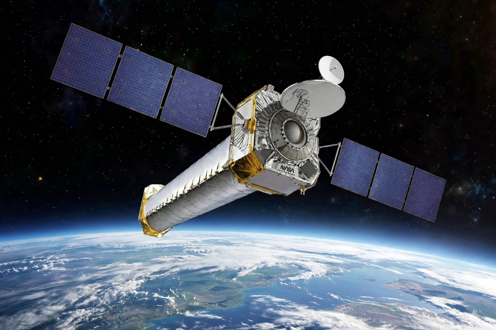

| Operator | NASA / Smithsonian Astrophysical Observatory |
|---|---|
| Launch | 23 July 1999, STS-93 |
| Orbit | Highly elliptical, ~139,000 km apogee |
| Resolution | ~0.5 arcsecond |
| Named for | Subrahmanyan Chandrasekhar |
The Chandra X-ray Observatory is a NASA flagship space telescope launched in 1999 to observe the universe in X-rays, one of NASA's Great Observatories.
Design
Exceptionally smooth grazing-incidence mirrors give images far sharper than earlier X-ray telescopes. Instruments include ACIS, the High Resolution Camera, and transmission gratings.
Discoveries
Chandra imaged supernova remnants such as Cassiopeia A, revealed dark matter in the Bullet Cluster, and probed matter around supermassive black holes and hot gas in galaxy clusters.
Operations
Operated by the Smithsonian Astrophysical Observatory's Chandra X-ray Center in Cambridge, Massachusetts, it has worked for over two decades, far beyond its planned life.